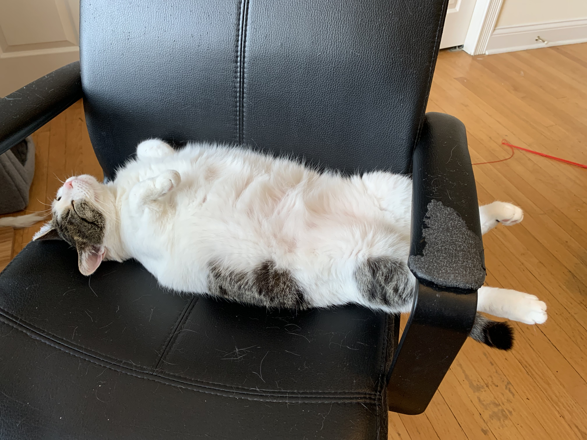

The Care and Feeding of Akira Eggtart Onlyfans Braverman

This is my cat, Kira. She loves:
- breakfast sandwiches
- her electric blanket
- occasionally chewing on humans
- lounging on the couch
Cat sitting instructions
Kira only requires a few things when you take care of her:
- two scoops of cat food every day
- refill her water when it gets low
- scoop her litter
- turn on her electric blanket (setting: low)
- play with her a lil bit
More info:
- food is in the plastic container near her food and water bowls
- litter box is in the guest room
- the black plastic bin next to the litter box is the litter genie - dump stuff in there then pull the gray tab
- the electric blanket has a 4 hour automatic timer, so don't worry it won't burn down the house if you leave
- toys are in the basket in the living room, or there's a laser pointer and treats on top of the kitchen cart!
Kira is not allowed:
- to scratch the gray arm chair - please sternly tell her no if she does
- to go outside (she probably won't try very hard to do so)
- to eat entire breakfast sandwiches/pizza slices/bao/anything primarily made of carbs, no matter how much she wants to
- to chew on you (but madeline always lets her so, you know, shrug dot emoji)
I mean ideally she wouldn't scratch any furniture, but i'm keeping my expectations reasonable and focusing on the gray chair
- it's good to set achievable goals
- also she can have a little bit of your breakfast sandwich, as a treat